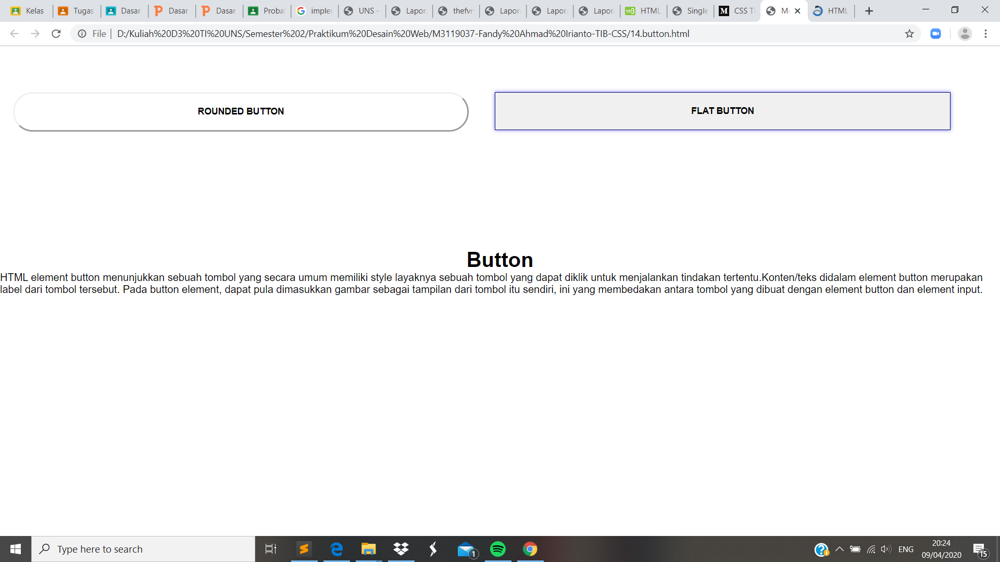

Membuat Button
Pendahuluan
HTML element button menunjukkan sebuah tombol yang secara umum memiliki style layaknya sebuah tombol yang dapat diklik untuk menjalankan tindakan tertentu.Konten/teks didalam element button merupakan label dari tombol tersebut. Pada button element, dapat pula dimasukkan gambar sebagai tampilan dari tombol itu sendiri, ini yang membedakan antara tombol yang dibuat dengan element button dan element input.
Codingan
<!DOCTYPE html>
<html lang="id">
<head>
<meta charset="utf-8">
<meta name="viewport" content="width=device-width, initial-scale=1.0">
<title>Membuat Button</title>
<link rel="stylesheet" type="text/css" href="button-style.css">
</head>
<body>
<button class="btn rounded-btn">Rounded Button</button>
<button class="btn flat-btn">Flat Button</button>
<div class="text-styling"></div>
<h1><center>Button</center></h1>
<p>HTML element button menunjukkan sebuah tombol yang secara umum memiliki style
layaknya sebuah tombol yang dapat diklik untuk menjalankan tindakan tertentu.
Konten/teks didalam element button merupakan label dari tombol tersebut. Pada
button element, dapat pula dimasukkan gambar sebagai tampilan dari tombol itu
sendiri, ini yang membedakan antara tombol yang dibuat dengan element button
dan element input.</p>
</body>
</html>
Kode CSS Eksternal
*{
margin: 0;
padding: 0;
font-family: 'Roboto', sans-serif;
}
.text-styling{
margin: 20px 50px 20px 50px;
padding: 250px 50px 20px 50px;
font-family:Roboto,san-serif;
font-style:italic;
text-align: center;
font-weight: 600;
color:#20B2AA;
text-transform: capitalize;;
line-height: 1.7;
}
.btn{
width: 700px;
margin: 50px 20px 30px 20px ;
padding: 20px 20px;
background-color: #20B22AA;
float: left;
cursor: pointer;
font-size: 14px;
font-weight: 600;
text-transform: uppercase;
}
.rounded-btn{
background: #FFFFFF;
color: #20B22AA;
border-radius: 30px;
border: solid 3px #20B22AA;
}
.flat-btn{
box-shadow: 0 0 6px #8080ff;
color:#80ffffs;
border: solid thin #000066;
}
Hasil Screenshot

Analisis
Pada percobaan membuat border ini saya mengikuti codingan pada modul dan hanya menambahkan paragraf serta menganti ukuran serta warna dari border flat. Border ini dapat kita gunakan untuk mengarahkan seperti hyperlink ke halaman web berikutnya atau dalam arti lain sebagai tombol. Dan untuk penbuatan border ini ada dua jenis yang dibuat yakni rounded dan flat.